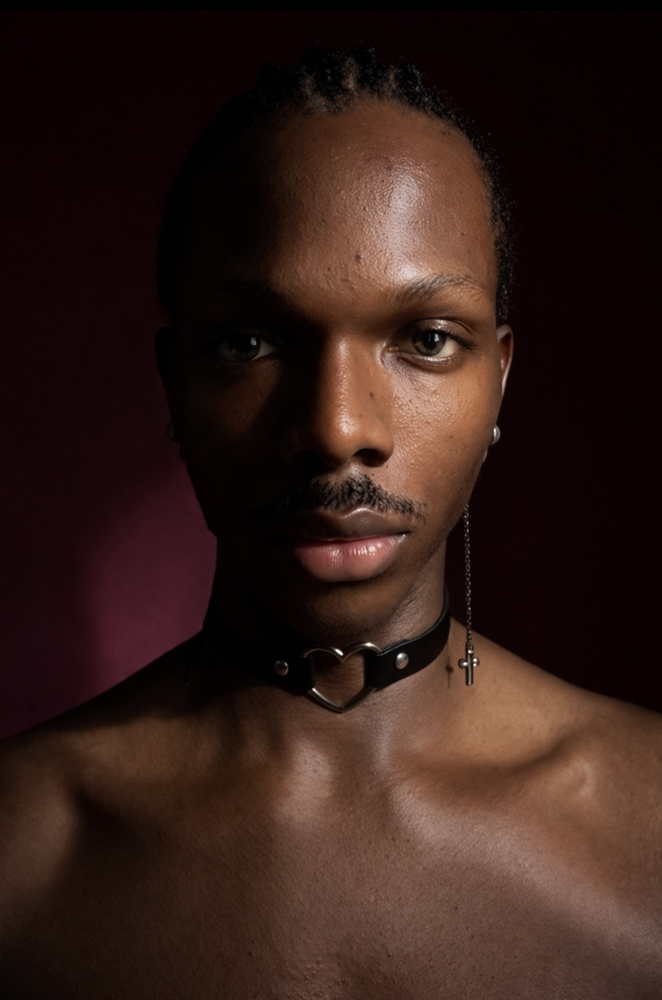
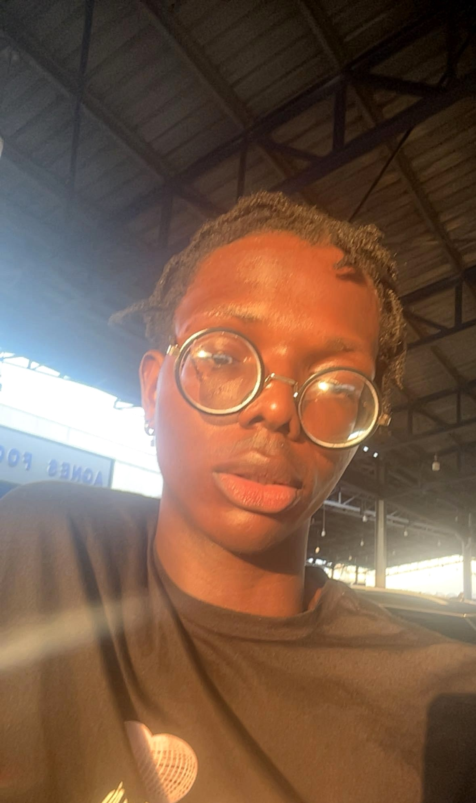
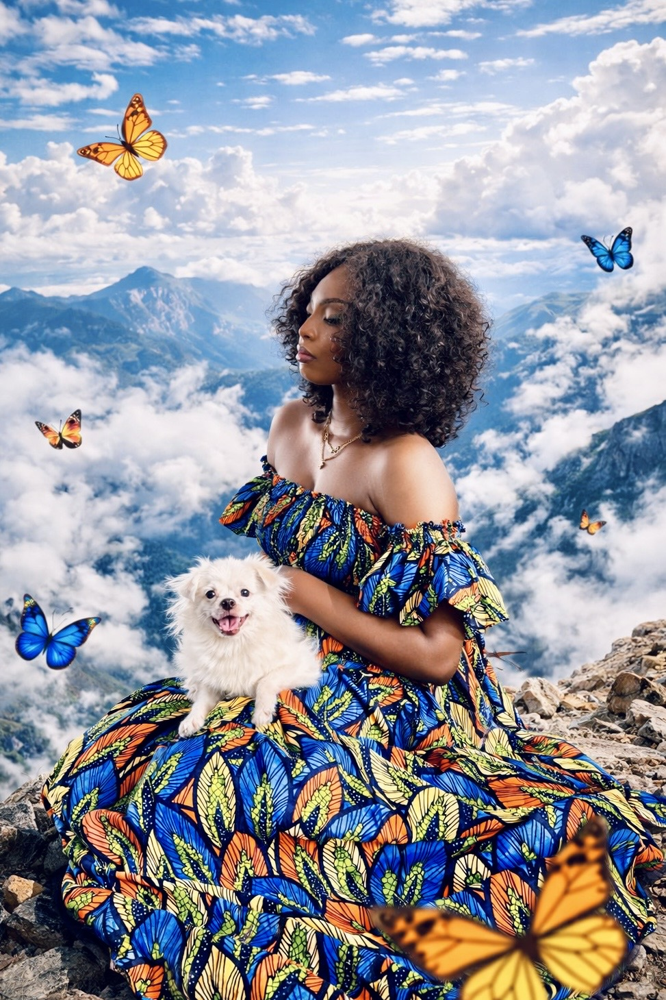
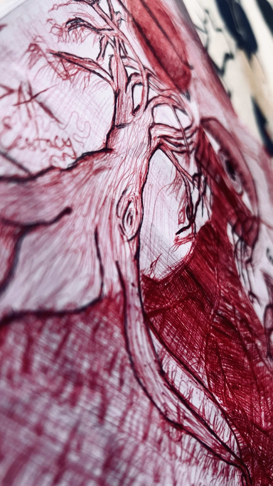
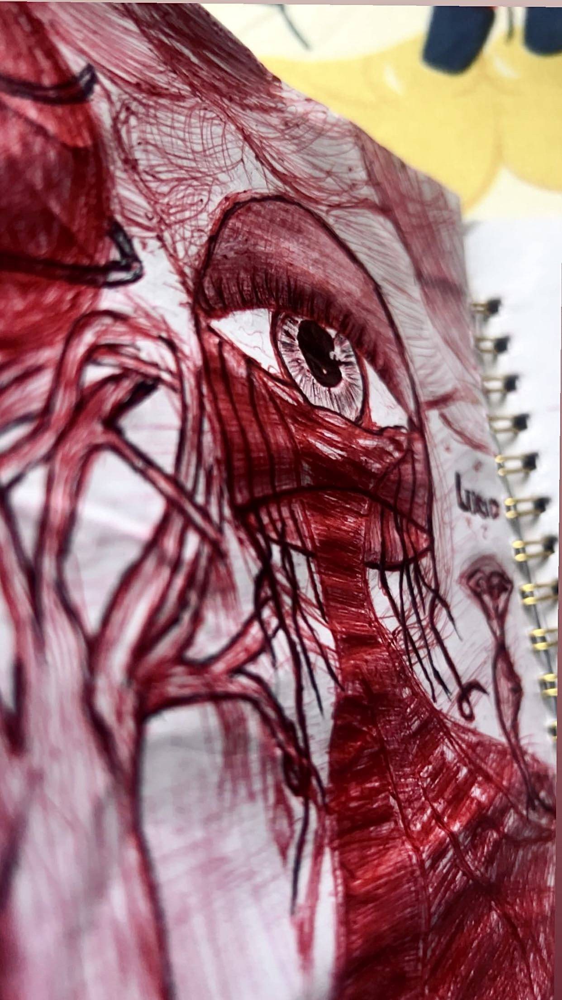

Portrait study
Presence in shadow
A restrained portrait built on contrast, stillness, and quiet confidence. The darkness does not hide the subject. It sharpens the emotion.
View on InstagramPortraits with presence
Dak Pose is a photography space shaped by mood, texture, and emotion. Every frame is built to feel intimate, intentional, and unforgettable.


About Dak Pose
Dak Pose explores portraiture through atmosphere, contrast, and honest presence. The work moves between softness and intensity, using light, styling, and framing to pull viewers closer.
This space gathers selected images, visual studies, and ongoing concepts in one home. It is part gallery, part journal, and part invitation into the creative process behind the lens.
Selected frames
Portraits, visual experiments, and expressive studies that define the Dak Pose mood.
Portrait study
A restrained portrait built on contrast, stillness, and quiet confidence. The darkness does not hide the subject. It sharpens the emotion.
View on Instagram
Fantasy portrait
A playful and imaginative frame where fashion, softness, and surreal detail meet. It opens the door to storytelling beyond the ordinary.
View on InstagramLight study
This frame leans into warmth, texture, and natural glow. It feels immediate, relaxed, and full of human presence.
View on Instagram

Sketchbook studies
These close details bring raw process into view. The line work feels restless, vivid, and deeply expressive.
View on InstagramCurrent projects
A developing body of work focused on direct gaze, controlled light, and emotional restraint. This project studies how silence can feel loud inside a portrait.
An ongoing series built around natural light, warmth, and fleeting atmosphere. The aim is to create images that feel remembered as much as they are seen.
A visual archive of sketches, draft studies, and unfinished ideas. This project brings the making process forward and treats raw experimentation as art in itself.
The feed is where portraits, studies, and project updates unfold in real time. It is the fastest way to stay close to the work as it grows.
Visit the profileContact
If you want to create something intimate, striking, and intentional, let us talk. Dak Pose is available for selected shoots, concepts, and collaborative image making.